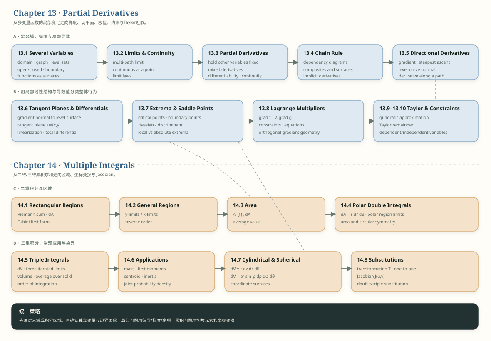

第13章：局部变化
从定义域和水平集到偏导、方向导数、切平面、极值和约束；关键是把“所有方向”与“分别固定变量”区分开。
第 13 章用多变量极限、偏导、梯度、切平面和二阶判别读取函数的局部形状；第 14 章把有限求和推向二维和三维区域，再用坐标变换选择更合适的面积元或体积元。两章共同要求：先明确定义域或区域，再计算。
00 · Batch Brief
从定义域和水平集到偏导、方向导数、切平面、极值和约束；关键是把“所有方向”与“分别固定变量”区分开。
先画区域，再写积分上下限和面积/体积元素；极坐标、柱坐标、球坐标和 Jacobian 都是坐标变换。
逐项检查偏导存在与可微、混合偏导条件、极值边界、二重积分次序、三类坐标体积元和换元方向。
01 · Dependency Map

极限要求所有路径统一；偏导只固定其他变量；可微要求线性主部控制整个增量；梯度给出最速变化方向，二阶 Hessian 给出局部形状。
二重/三重积分都是 Riemann 和的极限；Fubini 把多重积分转成累次积分；坐标变换改变面积/体积元素，Jacobian 是缩放的统一解释。
02 · English Terminology
重点区分 partial derivative 与 differentiability、gradient 与 directional derivative、critical point 与 saddle point、double integral 与 iterated integral，以及 cylindrical、spherical 与 Jacobian。
| English term | 中文译名 | 简明定义 | 对应节 | 关键公式 / 提示 |
|---|
| 易混项 | 关键区别 | 核对问题 |
|---|---|---|
| partial derivative / differentiability | 偏导只固定其他变量；可微要求全方向线性近似。 | 是否只沿坐标方向检查？ |
| gradient / directional derivative | 梯度是向量；方向导数是标量，等于梯度在单位方向上的投影。 | 当前变量是向量还是数？ |
| critical point / extremum | 临界点只是候选；二阶判别和边界比较决定结果。 | 是否检查了边界和判别式？ |
| double integral / iterated integral | 前者是区域上的统一极限；后者是 Fubini 条件允许的计算形式。 | 区域与积分次序是否对应？ |
| polar / cylindrical / spherical | 面积/体积元素分别是 r dr dθ、r dz dr dθ、ρ² sinφ dρ dφ dθ。 | 是否漏掉 Jacobian 因子？ |
| Jacobian / determinant sign | 换元使用 |J|；J 的符号与方向有关。 | 是否取了绝对值并正确对应区域？ |
New Chapter Summary
从多变量定义域与水平集出发，建立偏导、链式法则、梯度、切平面、二元极值、约束优化和 Taylor 近似。
多元函数把一个元组映射到一个实数；定义域、边界、开闭性和有界性决定极限、连续和极值是否可讨论。图像是空间曲面，水平曲线/水平面把三维信息压缩到二维。
f(x,y)=c 给出等高线；f(x,y,z)=c 给出等值面。它们把固定输出反读为几何对象。
内点有完整邻域；边界点任意邻域都跨越区域内外；极值问题必须写明闭/开与有界性。
二元极限要求点从所有可能路径接近时都趋于同一个 L。只验证坐标方向或直线方向通常不够；沿两条合法路径得到不同结果即可证明极限不存在。
偏导是固定其余变量后的一元导数；它给出曲面沿坐标方向切线的斜率。偏导存在不能保证连续或可微；连续的一阶偏导才给出可微性的可靠判据。
对 x 求偏导时 y 固定，反之亦然。
误差必须比增量范数更快趋于零。
连续性条件不满足时，两个混合偏导可能不同。
链式法则沿每一条变量依赖路径乘偏导，再把路径相加。先画依赖图，能避免漏项；隐函数公式只是链式法则在 F=0 上的应用。
外层可微、内层可微；路径项按所有中间变量相加。
F_z 非零并满足隐函数定理条件。
方向导数把“固定其他变量”扩展为沿任意单位方向的变化率。梯度是该方向导数的最优方向：正梯度最速上升，负梯度最速下降，垂直于等高线。
方向必须是单位向量；否则得到的是未归一化的方向变化率。
梯度为零时最速方向没有定义。
等值面的梯度是法向量，切平面由 n·(r−r₀)=0 给出；函数图像 z=f(x,y) 的切平面是一阶线性化，微分则把局部变化线性化。
梯度在该点非零。
函数在点的邻域可微。
中心点固定，x、y 可以取在邻域内。
dx、dy 是独立增量，df 近似真实增量 Δf。
局部极值只可能出现在内部临界点或边界。二阶导数判别法用 Hessian 识别曲面弯曲；闭区域绝对极值还要单独比较全部边界片段。
一阶偏导为零且二阶偏导连续；D=0 需换方法。
约束曲线或曲面上的最优点处，目标函数梯度与约束梯度平行；求解时必须同时满足所有约束方程。Lagrange 方法先找候选点，再用几何/边界/比较解释确认。
∇g≠0；多个约束需要多个乘数。
二元 Taylor 公式把增量 h、k 通过偏导算子展开；二次近似同时包含两个二次项和混合项，是二阶导数判别的统一来源。
偏导在中心点取值；更高阶余项需要单独估计。
有约束时，“对 x 求偏导”必须先说明哪些变量独立。选择不同的依赖变量会改变偏导的几何意义和数值，不能只写一个没有下标的 ∂w/∂x。
下标明确固定了哪些独立变量。
| 教材例题/定理 | 结论 | 位置 |
|---|---|---|
| Examples 2–4（13.1） | 定义域、曲面图像、水平曲线与等值面。 | 教材p.761–763 / PDFp.762–764 |
| Example 5（13.2） | 沿直线路径存在不等于二元极限存在。 | 教材p.772 / PDFp.773 |
| Examples 8–Theorem 4（13.3） | 偏导存在不保证连续；连续偏导保证可微。 | 教材p.781–785 / PDFp.782–786 |
| Examples 1–5（13.4） | 一棵/多棵中间变量树形图；隐函数公式。 | 教材p.790–795 / PDFp.791–796 |
| Examples 2–4（13.5） | 梯度点积方向导数；等高线法向与切线。 | 教材p.801–803 / PDFp.802–804 |
| Examples 1,5–6（13.6） | 切平面、线性化和全微分。 | 教材p.807–812 / PDFp.808–813 |
| Examples 2,4,6（13.7） | 鞍点、局部极大、闭区域边界极值。 | 教材p.818–821 / PDFp.819–822 |
| Example 1（13.9） | sinx siny 在原点二次近似为 xy，并给误差界。 | 教材p.838 / PDFp.839 |
偏导只检查坐标方向；可微要求所有方向线性误差统一趋于零。
开闭性、内点和边界点决定极限和极值候选。
先画依赖图，再沿所有路径乘偏导并相加。
方向导数的方向向量必须单位化。
判别式为零时二阶判别失效。
不同约束选择会给出不同的 ∂w/∂x。
New Chapter Summary
用二维、三维区域上的极限求和定义多重积分；用 Fubini、区域重写、极坐标、柱/球坐标和 Jacobian 完成计算。
矩形区域上的二重积分由二维 Riemann 和定义；Fubini 定理允许把它写成任意次序的累次积分。面积元 dA 在直角坐标中就是 dx dy。
所有足够细分和样本点给同一极限。
f 在矩形上连续时两种次序相同。
一般区域需要先画图并描述上下或左右边界。I 型区域先对 y 积分，II 型区域先对 x 积分；交换次序必须重写区域，不能只交换符号。
内层上下限依赖外层变量，且区域连续可描述。
面积是常数函数 1 的二重积分；平均值是函数积分除以面积。它们把二重积分直接连接到几何与统计型解释。
区域闭且有界、可积。
面积 A(R) 非零。
圆形、扇形和极坐标边界适合转成 (r,θ)。关键不是只替换 x、y，而是把面积元 dx dy 换成 r dr dθ；r 的上下限由射线进入/离开区域确定。
r≥0；同一点其他极坐标表示需结合区域判断。
内层 r 限可依赖 θ，角度总跨不超过 2π。
三重积分对空间区域中的体积元求和。通常按投影区域确定外层积分，再让一条平行 z 轴射线穿过立体确定 z 限；其他积分次序同理。
F 在可积区域 D 上连续。
内层 z 限是外层 x、y 的函数。
积分函数为 1。
V(D)>0。
密度积分得质量；坐标乘质量元积分得一阶矩；矩除以质量得质心；平方距离乘质量元积分得转动惯量。二维薄板、三维固体和概率积分都遵循同一“质量元”结构。
密度非负；总质量非零。
到轴距离平方乘质量元。
概率事件是区域上的积分。
柱坐标适合圆柱、抛物面和绕 z 轴的旋转体；球坐标适合球体、圆锥和径向边界。体积元必须同时包含角度/半径的几何因子。
dV=r dz dr dθ，不能漏 r。
先用 z 射线，再用极坐标平面区域。
ρ≥0，0≤φ≤π。
体积元为 ρ² sinφ dρ dφ dθ。
一般换元把参数区域 G 一一映到实际区域 R。Jacobian 的绝对值是局部面积/体积缩放因子；积分区域、被积函数和微分元素必须一起变换。
坐标变换需有连续一阶偏导。
变换在内部一一对应，使用 |J|。
三维 Jacobian 的绝对值缩放体积元。
| 教材例题/定理 | 结论 | 位置 |
|---|---|---|
| Examples 1–2（14.1） | 矩形上 Fubini：同一积分可用两种次序；体积是 dA 累加。 | 教材p.853–854 / PDFp.854–855 |
| Examples 1,3（14.2） | 一般区域先画图；交换次序需重写上下限。 | 教材p.857–860 / PDFp.858–861 |
| Examples 1–2（14.3） | 面积=∫∫1 dA；边界曲线交点决定区域。 | 教材p.865–866 / PDFp.866–867 |
| Examples 1–3（14.4） | 极坐标 dA=r dr dθ；圆形区域大幅简化。 | 教材p.869–870 / PDFp.870–871 |
| Examples 1–5（14.5） | 三重积分按 z-y-x 或重排次序；体积=∫∫∫1 dV。 | 教材p.877–881 / PDFp.878–882 |
| Examples 1,4–7（14.6） | 质量、质心、惯量与联合概率密度都由积分元素构成。 | 教材p.885–892 / PDFp.886–893 |
| Examples 1,3–5（14.7） | 柱/球坐标体积元分别为 r dz dr dθ 与 ρ²sinφ dρdφdθ。 | 教材p.895–901 / PDFp.896–902 |
| Examples 1–5（14.8） | Jacobian 的绝对值缩放面积/体积元素。 | 教材p.907–913 / PDFp.908–914 |
积分限不是符号对调，要重新描述区域。
dA=r dr dθ，径向因子必须出现。
dV=r dz dr dθ，不能写成 dz dr dθ。
球坐标体积元素必须含 ρ²sinφ。
积分换元使用 |J|；负数方向要结合区域解释。
多重积分区域有界时，闭区域极值/物理量仍需检查边界。
05 · Deliberate Practice
题目按章节、边界、坐标和积分元素映射。先独立作答，再展开提示、关键步骤和完整解析；积分题要写出区域和上下限。
06 · Recall & Diagnosis
| 练习编号 / 知识点 | 错误类型 | 应回看的内容 |
|---|---|---|
尚未编辑
07 · Quality Gate
| 检查项 | 结果 | 证据 / 说明 | 缺陷等级 |
|---|---|---|---|
| G1 版本与来源 | 通过 | 第13章759–849、第14章850–921与PDF物理页逐节核对。 | 无 |
| G2 章节覆盖 | 通过 | 13.1–13.10、14.1–14.8全部覆盖。 | 无 |
| G3 术语 | 通过 | 86个新增术语，按章节和字母检索。 | 无 |
| G4 定理与公式 | 通过 | 偏导、梯度、切平面、极值、Lagrange、多重积分与Jacobian公式。 | 无 |
| G5 例题结论 | 通过 | 两章代表例题均有教材页/PDF页锚点。 | 无 |
| G6 练习与答案 | 通过 | 每章15道原创题，五种题型、三级答案。 | 无 |
| G7 计算与渲染 | 通过 | 62项代表性复算通过；36个页面公式无裁切，KaTeX错误为0。 | 无 |
| G8 图表与链接 | 通过 | B7知识图、章节导航、术语和练习检索可用。 | 无 |
| G9 网页与打印 | 通过 | 桌面、390px移动端与A4 PDF逐页检查；复杂公式允许卡内滑动。 | 无 |
| G10 版权与版本 | 通过 | 原创提炼与练习，不复制整节教材或混入其他资料。 | 无 |
08 · Source Ledger
| 节 | 教材页 | PDF物理页 | 内部标题 |
|---|---|---|---|
| 13.1 | 759–766 | 760–767 | 多变量函数、图像与水平集 |
| 13.2 | 767–775 | 768–776 | 多元极限与连续 |
| 13.3 | 776–787 | 777–788 | 偏导、混合偏导与可微 |
| 13.4 | 788–797 | 789–798 | 链式法则与隐函数偏导 |
| 13.5 | 798–805 | 799–806 | 方向导数与梯度 |
| 13.6 | 806–815 | 807–816 | 切平面、线性化与全微分 |
| 13.7 | 816–824 | 817–825 | 极值、鞍点与闭区域 |
| 13.8 | 825–834 | 826–835 | Lagrange乘数法 |
| 13.9 | 835–838 | 836–839 | 二元Taylor公式 |
| 13.10 | 839–842 | 840–843 | 约束变量与偏导记号 |
| 14.1 | 850–854 | 851–855 | 矩形区域二重积分与Fubini |
| 14.2 | 855–863 | 856–864 | 一般区域与积分次序 |
| 14.3 | 864–866 | 865–867 | 面积与平均值 |
| 14.4 | 867–873 | 868–874 | 极坐标二重积分 |
| 14.5 | 874–883 | 875–884 | 直角坐标三重积分 |
| 14.6 | 884–893 | 885–894 | 质量、矩、惯量与概率 |
| 14.7 | 894–905 | 895–906 | 柱坐标与球坐标 |
| 14.8 | 906–915 | 907–916 | 换元与Jacobian |